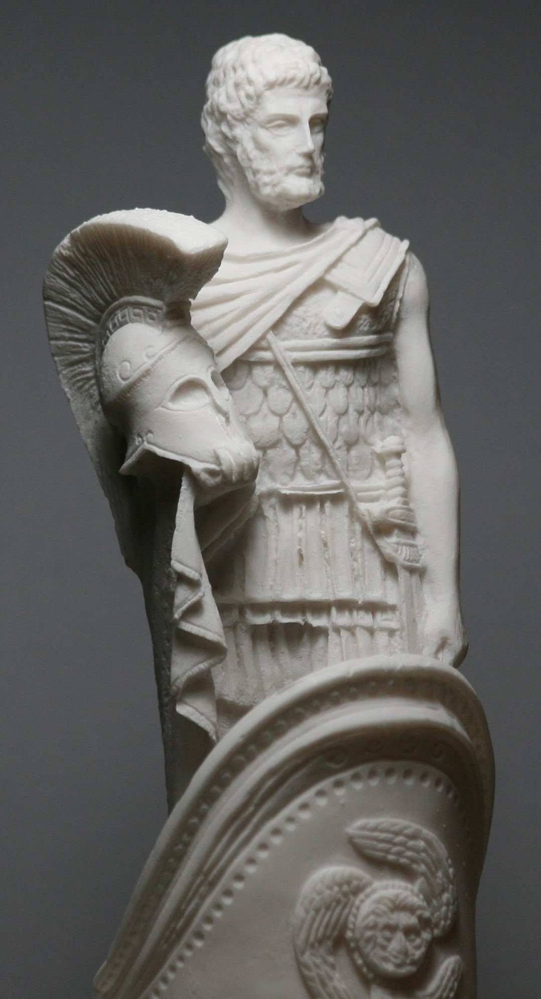

Mars
Namen
- lateinisch: Mars
- griechisch: Ares
Tätigkeitsfeld
Gott des Krieges:
- Verkörperung des schrecklichen Krieges, des Blutbades und Massakers
- Repräsentation der rohen, wilden und gewalttätigen Seite des Kampfes
- Förderung von Aggression und Blutrünstigkeit in Schlachten
charakteristische Tätigkeiten:
- aktive Teilnahme an Kämpfen, oft auf Seiten der Trojaner im Trojanischen Krieg
- Anstachelung des Kampfgeistes bei Sterblichen
- unkrontrollierte Gewalt und Zerstörung
Attribute
- Helm
- Speer
- Schild
- Streitwagen
- Pferd
- Schlange
